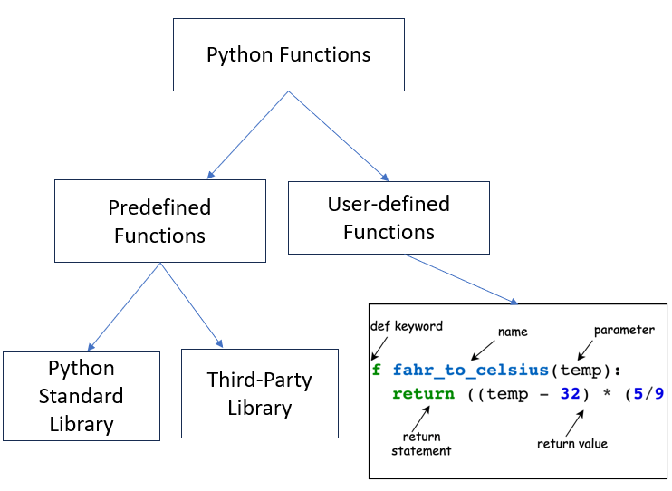

4 Functions
4.1 Function Definition
Functions are the fundamental building blocks of any Python program. They are organized blocks of reusable code designed to perform a specific task. A function can take one or more inputs (parameters), execute a block of code, and optionally return one or more values.
4.1.1 Why Use Functions?
Functions allow developers to write modular, reusable, and efficient code. Instead of duplicating the same logic multiple times, functions let you define the logic once and call it wherever needed.
4.2 Advantages of Functions
- Increases Modularity
- Functions allow the program to be divided into smaller, manageable parts, making it easier to understand, implement, and maintain.
- Reduces Redundancy
- By defining a function once, you avoid rewriting the same code multiple times. Simply call the function when needed.
- Maximizes Code Reusability
- Functions can be used as many times as necessary, enabling you to reuse your code efficiently and reducing overall development effort.
- Improves Code Readability
- Dividing a large program into smaller functions improves the clarity and readability of the code, making it easier to debug and maintain
4.3 Types of Functions
There are two types of functions in python:
- User-Defined Functions - these types of functions are defined by the user to perform any specific task
- Predefined Functions - These are built-in functions in python.
4.3.1 Built-in Functions
These are pre-defined functions that perform common tasks. Built-in functions come from two main sources:
- Python Standard Libaries
- Third-Party Libraries
4.3.1.1 Python Standard Library
The Python Standard Library is an umbrella term for all the modules (A module is a file containing Python code (functions, classes, variables) that can be reused in your programs) and packages that come with Python, including both built-in modules (e.g., __builtins__) and other modules that require importing. Think of the standard library as a toolbox, with some tools always on the table (built-in) and others stored in drawers (import-required). Built-in functions like print(), len(), and type() are available directly without needing to import anything. They are part of Python’s built-in namespace, which is loaded into memory when Python starts.
Many modules in the Python Standard Library, like math, os, or datetime, are not automatically loaded to keep the startup time and memory usage low. To access functions or classes from these modules, you need to explicitly import them using the import keyword.
Let’s see different ways to import modules next
- Basic Import
import math
# To use a function from the module, preface it with random followed by a dot, and then the function name
print(math.sqrt(16))4.0- Import Specific Functions or Classes
# import only sqrt function from math module
from math import sqrt, pi
print(sqrt(25))5.0- Import with Alias:
import numpy as np
print(np.array([1, 2, 3]))[1 2 3]- Wildcard Import (Not Recommended):
from math import *
print(sin(1))0.8414709848078965This way imports every function from the module. You should usually avoid doing this, as the module may contain some names that will interfere with your own variable names. For instance if your program uses a variable called total and you import a module that contains a function called total, there can be problems. In contrast, the first way imports an entire module in a way that will not interfere with your variable names. To use a function from the module, preface it with the module name followed by a dot
Location: Usually, import statements go at the beginning of the program, but there is no restriction. They can go anywhere as long as they come before the code that uses the module.
4.3.1.2 Useful Modules
Here’s a list of commonly used and useful modules from the Python Standard Library:
os: For interacting with the operating system, such as file paths and environment variables.sys: For interacting with the Python runtime environmentre: For regular expressions and pattern matchingmath: For mathematical functions and constantsrandom: For generating random numbers.datetime: For working with dates and timestime: For measuring time or introducing delays.
4.3.1.2.1 Random Numbers
Generating random numbers is very useful in python for performing simulations (we’ll see in later chapters). The library random is used to generate random numbers such as integers, real numbers based on different probability distributions, etc.
Below is an example of using the randint() function of the library for generating random numbers in [a, b], where a and b are integers.
import random as rm
rm.randint(5,10) #This will generate a random number in [5,10]7The random number will be different every time we run the program.
4.3.1.2.2 Math Functions
Python’s math module is part of the standard library and provides access to common mathematical functions and constants. You can use these functions for tasks such as computing square roots, trigonometric operations, logarithms, factorials, and more.
For example:
from math import sin, pi
print(pi)
print(pi/2)
print('sin(pi/2) =', sin(pi/2))3.141592653589793
1.5707963267948966
sin(pi/2) = 1.04.3.1.3 Getting Help from Python on a Module
There is documentation built into Python. To get help on the random module
dir(rm)['BPF',
'LOG4',
'NV_MAGICCONST',
'RECIP_BPF',
'Random',
'SG_MAGICCONST',
'SystemRandom',
'TWOPI',
'_ONE',
'_Sequence',
'__all__',
'__builtins__',
'__cached__',
'__doc__',
'__file__',
'__loader__',
'__name__',
'__package__',
'__spec__',
'_accumulate',
'_acos',
'_bisect',
'_ceil',
'_cos',
'_e',
'_exp',
'_fabs',
'_floor',
'_index',
'_inst',
'_isfinite',
'_lgamma',
'_log',
'_log2',
'_os',
'_pi',
'_random',
'_repeat',
'_sha512',
'_sin',
'_sqrt',
'_test',
'_test_generator',
'_urandom',
'_warn',
'betavariate',
'binomialvariate',
'choice',
'choices',
'expovariate',
'gammavariate',
'gauss',
'getrandbits',
'getstate',
'lognormvariate',
'normalvariate',
'paretovariate',
'randbytes',
'randint',
'random',
'randrange',
'sample',
'seed',
'setstate',
'shuffle',
'triangular',
'uniform',
'vonmisesvariate',
'weibullvariate']This provides a list of all the functions and variables in the random module. You can ignore entries that start with underscores, as they are typically used internally. To get help on a specific function, such as the uniform function, you can type:
help(rm.uniform)Help on method uniform in module random:
uniform(a, b) method of random.Random instance
Get a random number in the range [a, b) or [a, b] depending on rounding.
The mean (expected value) and variance of the random variable are:
E[X] = (a + b) / 2
Var[X] = (b - a) ** 2 / 12
For a comprehensive overview of the entire math module, type:
# help(rm) #This will give you all the functions available in the random moduleI encourage you to explore the documentation for a deeper understanding, especially when you need to use a module but are unsure how to get started.
4.3.2 Practice exercise 1
- Can you use math.sqrt(16) without importing the math module? Why or why not?
- Identify whether the following functions require importing a module:
abs()random.randint()time.sleep()
4.3.3 Practice exercise 2
Generate a random number between [-5,5]. Do this 10,000 times. Find the mean of all the 10,000 random numbers generated.
Solution:
import random as rm
counter = 0
for i in range(10000):
counter = counter + rm.uniform(-5,5)
print("Mean is:", counter/10000)Mean is: 0.0614338102265166164.3.3.1 Third-Party Python libraries
Other than the Python Standard Library, Python has hundreds of thousands of additional libraries that provide a wealth of useful functions. Since Python is an open-source platform, these libraries are contributed by developers from around the world. Some of the most popular libraries in data science and their purposes are listed below:
- NumPy: Performing numerical operations and efficiently storing numerical data.
- Pandas: Reading, cleaning and manipulating data.
- Matplotlib, Seaborn: Visualizing data.
- SciPy: Performing scientific computing such as solving differential equations, optimization, statistical tests, etc.
- Scikit-learn: Data pre-processing and machine learning, with a focus on prediction.
- Statsmodels: Developing statistical models with a focus on inference
Before you can use them, you need to install each library and then import it in your code.
A library can be imported using the import keyword after it has been successfully installed. For example, the NumPy library can be imported as:
import numpy as npUsing the as keyboard, the NumPy library has been given the name np. All the functions and attributes of the library can be called using the ‘np.’ prefix. For example, let us generate a sequence of whole numbers upto 10 using the NumPy function arange():
np.arange(8)array([0, 1, 2, 3, 4, 5, 6, 7])You will use these libraries in the upcoming data science courses.
4.4 User-defined Functions
A user-defined function is a function created by the user in Python to perform a specific task. Unlike built-in functions (like print() or len()), user-defined functions allow you to define custom functionality tailored to your program’s needs.
The image below provides a helpful breakdown of a Python function definition with labels for each component.

4.4.1 Key Components (Based on the Diagram)
defkeyword: Indicates the start of a function definition.- Function name: A descriptive name for the function, following Python naming conventions.
- Parameters: Variables passed into the function inside parentheses (
x,yin the example). These are optional. - Colon (
:): Signals the end of the function header and the start of the body. - Docstring: A multi-line string (optional) that describes the purpose and functionality of the function.
- Function body: Contains the logic and statements of the function.
returnstatement: Outputs a result back to the caller. This is optional.
4.4.2 Example
Look at the function defined below. It asks the user to input a number, and prints whether the number is odd or even.
#This is an example of a function definition
def odd_even():
num = int(input("Enter an integer:"))
if num%2==0:
print("Even")
else:
print("Odd") #Function definition ends here
print("This line is not a part of the function as it is not indented") #This line is not a part of the functionThis line is not a part of the function as it is not indentedNote that the function is defined using the def keyword. All the lines within the function definition are indented. The indentation shows the lines of code that below to the function. When the indentation stops, the function definition is considered to have ended.
Whenever the user wishes to input a number and print whether it is odd or even, they can call the function defined above by its name as follows:
odd_even()Enter an integer:5
OddIn Python, empty parentheses are used when defining a function, even if it doesn’t take any parameters. This is a syntactic requirement to differentiate between variables and functions. It helps Python understand that you are defining a function, not just referencing a variable.
4.4.3 Parameters and arguments of a function
Note that the function defined above needs no input when called. However, sometimes we may wish to define a function that takes input(s), and performs computations on the inputs to produce an output. These input(s) are called parameter(s) of a function. When a function is called, the value(s) of these parameter(s) must be specified as argument(s) to the function.
4.4.3.1 Function with a parameter
Let us change the previous example to write a function that takes an integer as an input argument, and prints whether it is odd or even:
#This is an example of a function definition that has an argument
def odd_even(num):
if num%2==0:
print("Even")
else:
print("Odd")We can use the function whenever we wish to find a number is odd or even. For example, if we wish to find that a number input by the user is odd or even, we can call the function with the user input as its argument.
number = int(input("Enter an integer:"))
odd_even(number)Enter an integer:6
EvenNote that the above function needs an argument as per the function definition. It will produce an error if called without an argument:
odd_even()--------------------------------------------------------------------------- TypeError Traceback (most recent call last) <ipython-input-8-d86a5f720e3b> in <module> ----> 1 odd_even() TypeError: odd_even() missing 1 required positional argument: 'num'
4.4.3.2 Function with a parameter having a default value
To avoid errors as above, sometimes is a good idea to assign a default value to the parameter in the function definition:
#This is an example of a function definition that has an argument with a default value
def odd_even(num=0):
if num%2==0:
print("Even")
else:
print("Odd")Now, we can call the function without an argument. The function will use the default value of the parameter specified in the function definition.
odd_even()Even4.4.3.3 Function with multiple parameters
A function can have as many parameters as needed. Multiple parameters/arguments are separated by commas. For example, below is a function that inputs two strings, concatenates them with a space in between, and prints the output:
def concat_string(string1, string2):
print(string1+' '+string2)concat_string("Hi", "there")Hi there4.4.4 Practice exercise 3
Write a function that prints prime numbers between two real numbers - a and b, where a and b are the parameters of the function. Call the function and check the output with a = 60, b = 80.
Solution:
def prime_numbers (a,b=100):
num_prime_nos = 0
#Iterating over all numbers between a and b
for i in range(a,b):
num_divisors=0
#Checking if the ith number has any factors
for j in range(2, i):
if i%j == 0:
num_divisors=1;break;
#If there are no factors, then printing and counting the number as prime
if num_divisors==0:
print(i)
prime_numbers(60,80)61
67
71
73
794.4.5 Functions that return objects
Until now, we saw functions that print text. However, the functions did not return any object. For example, the function odd_even prints whether the number is odd or even. However, we did not save this information. In future, we may need to use the information that whether the number was odd or even. Thus, typically, we return an object from the function definition, which consists of the information we may need in the future.
The example odd_even can be updated to return the text “odd” or “even” as shown below:
#This is an example of a function definition that has an argument with a default value, and returns an object
def odd_even(num=0):
if num%2==0:
return("Even")
else:
return("Odd")The function above returns a string “Odd” or “Even”, depending on whether the number is odd or even. This result can be stored in a variable, which can be used later.
response=odd_even(3)
response'Odd'The variable response now refers to the object where the string “Odd” or “Even” is stored. Thus, the result of the computation is stored, and the variable can be used later on in the program. Note that the control flow exits the function as soon as the first return statement is executed.
4.4.6 Global and local variables with respect to a function
A variable defined within a function is local to that function, while a variable defined outside the function is global with respect to that function. In case a variable with the same name is defined both outside and inside a function, it will refer to its global value outside the function and local value within the function.
The example below shows a variable with the name var referring to its local value when called within the function, and global value when called outside the function.
var = 5
def sample_function(var):
print("Local value of 'var' within 'sample_function()'= ",var)
sample_function(4)
print("Global value of 'var' outside 'sample_function()' = ",var)Local value of 'var' within 'sample_function()'= 4
Global value of 'var' outside 'sample_function()' = 54.4.7 Practice exercise 4: Create a Custom Calculator
Write a function calculator that performs basic arithmetic operations: addition, subtraction, multiplication, and division.
Steps:
- Define a function
calculatorwith three parameters:a,b, andoperation(a string indicating the operation, e.g.,'add','subtract'). - Use conditional statements to handle the operations.
- Return the result of the operation.
- Handle invalid operations gracefully.
Expected Output Examples:
print(calculator(10, 5, 'add')) # Output: 15
print(calculator(10, 5, 'subtract')) # Output: 5
print(calculator(10, 5, 'multiply')) # Output: 50
print(calculator(10, 5, 'divide')) # Output: 2.04.4.8 Bonus Challenge: Palindrome Checker
Write a function called is_palindrome that checks if a string is a palindrome (reads the same forward and backward).
Steps:
- Define the function
is_palindromewith one parameter,text. - Ignore case and spaces.
- Return
Trueif the string is a palindrome, otherwise False.
Expected OUtput Examples:
print(is_palindrome("radar")) # Output: True
print(is_palindrome("hello")) # Output: False
print(is_palindrome("A man a plan a canal Panama")) # Output: True